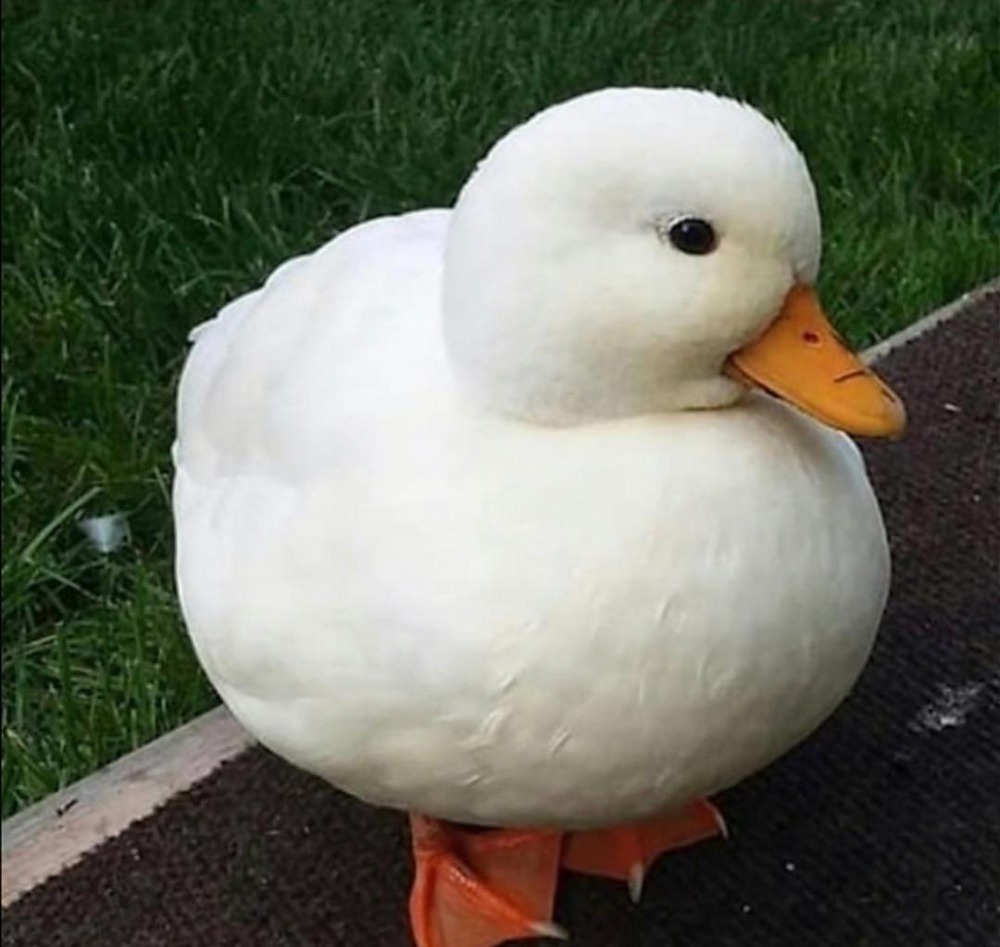
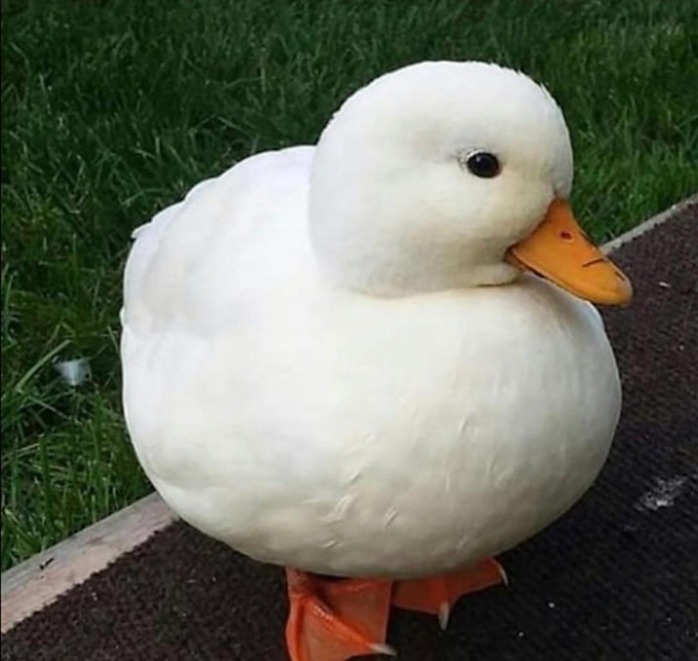

Hello my name is Shaheer and I am a 16 years old boy and student of grade 11. I love to play sports like soccer.
I have been playing on my school team and another club outside of school during grade 10.
During the summer, I love to go outside everyday and play soccer with my friends.
Volleyball is also my favorite game and I was in my school volleyball team during grade 10. I was also in cross country team for both grade 9 and 10
I believe in healthy lifestyle, I eat healthy usually homemade food by my mom and also for me workout is essential part of my life, I like to workout everyday. With daily physical activities, I love to play video games with my brother and friends. My favourite video game is minecraft.


I love anime as it is my favorite and I like the marvel universe a lot.
My favorite heroes in the marvel universe are spiderman, ironman, thor and the hulk.
My favorite shows in anime are One piece, Attack on Titan and bleach.


Ever since I was little, I really loved animals. I wish I can have a farm where I can keep all of my favourite animals like a cat, a duck, a bunny and a sheep whenever I grow up. I love natural beauty as it gives me heartwarming vibes.

 
